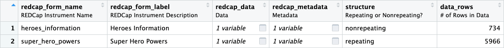

REDCap is a powerful database solution used by many institutions around the world. The REDCapR package streamlines calls to the REDCap API. One of its main uses is to import records from a REDCap project. This works well for simple projects, however becomes ugly when complex databases that include longitudinal structure and/or repeated instruments are involved.
The REDCapTidieR package aims to make the life of analysts who deal with complex REDCap databases easier. It builds upon REDCapR to make its output tidier. Instead of one large data frame that contains all data from all instruments, the analyst gets to work with a set of tidy tibbles, one for each REDCap instrument.
Case Study: The Superhero Database
Let’s look at a REDCap database that has information about some 734 superheroes, derived from the Superhero Database.
Here is a screenshot of the REDCap Status Dashboard of this database. Note that there are two instruments, Heroes Information which captures data about each individual superhero, and Super Hero Powers which captures each one of the superpowers that a specific superhero possesses.

REDCap Record Status Dashboard for the Superhero database
Importing data from REDCap
The read_redcap_tidy function is the workhorse of
REDCapTidieR. It requires a REDCap database URI and a REDCap API token.
Note that you need to have API access to the REDCap database to use
REDCapTidieR. You cannot use REDCapTidieR with files exported from
REDCap.
library(REDCapTidieR)
superheroes <- read_redcap_tidy(redcap_uri, token)
superheroes |>
dplyr::glimpse()
#> Rows: 2
#> Columns: 9
#> $ redcap_form_name <chr> "heroes_information", "super_hero_powers"
#> $ redcap_form_label <chr> "Heroes Information", "Super Hero Powers"
#> $ redcap_data <list> [<tbl_df[734 x 12]>], [<tbl_df[5966 x 4]>]
#> $ redcap_metadata <list> [<tbl_df[11 x 16]>], [<tbl_df[2 x 16]>]
#> $ structure <chr> "nonrepeating", "repeating"
#> $ data_rows <int> 734, 5966
#> $ data_cols <int> 12, 4
#> $ data_size <lbstr_by> 123.24 kB, 180.21 kB
#> $ data_na_pct <dbl> 0.2316076, 0.0000000This returns a tibble with two rows. You might expect more rows from
a database with 734 superheroes. read_redcap_tidy returns
data in a special object, the supertibble, which
contains a set of tidy tibbles, one for each REDCap instrument’s
data.
Each row of the supertibble corresponds to one REDCap instrument. The
redcap_form_name and redcap_form_label columns
identify that instrument. The redcap_data column contains a
tidy tibble with its data. Similarly, the redcap_metadata
column contains a tidy tibble with the REDCap metadata from that
instrument. Additional columns contain useful information about the
redcap_data tibble, such as the number of rows and columns,
the size in memory, and the percentage of missing values.
Exploring the contents of the supertibble
The supertibble is designed to be explored using the RStudio Data Viewer. Clicking on the table icon in the Environment tab opens a view of the supertibble. At a glance you see an overview of the instruments in the REDCap project.

Data Viewer showing the superheroes
supertibble
You can drill down into the individual data tables in the
redcap_data and redcap_metadata columns. Note
that in the heroes_information each row represents a
superhero, identified by their record_id.

Data Viewer showing the
heroes_information tibble
In the super_hero_powers data tibble, each row
represents a superpower of a specific hero. Each row is identified by
the combination of record_id and
redcap_repeat_instance. This difference in granularity is
because super_hero_powers is a repeating
instrument whereas heroes_information is a
nonrepeating instrument.

Data Viewer showing the
super_hero_powers tibble
You can also explore the tibbles in the redcap_metadata
column to find out about field labels, field types, and other field
attributes.

Data Viewer showing a the metadata tibble of
heroes_information
Extracting tibbles from the supertibble
REDCapTidieR provides three different functions to extract tibbles with data from individual instruments from a supertibble.
Binding tibbles into the environment
The bind_tables function takes a supertibble and binds
individual instruments directly into the environment. Note how the
super_hero_powers and heroes_information
tibbles appear in the Environment pane.

By default, bind_tables extracts all data tibbles from
the supertibble. With the tbls argument you can specify a
subset of tibbles that should be extracted. You can also supply your own
environment object to which the tibbles will be added using the
environment argument.
Extracting a list of tibbles
The extract_tables function takes a supertibble and
returns a list of tibbles. The default is to extract all tibbles.
superheroes_list <- superheroes |>
extract_tables()
superheroes_list |>
str(max.level = 1)
#> List of 2
#> $ heroes_information: tibble [734 × 12] (S3: tbl_df/tbl/data.frame)
#> $ super_hero_powers : tibble [5,966 × 4] (S3: tbl_df/tbl/data.frame)You can use tidyselect semantics to select specific tibbles.
superheroes |>
extract_tables(ends_with("powers")) |>
str(max.level = 1)
#> List of 1
#> $ super_hero_powers: tibble [5,966 × 4] (S3: tbl_df/tbl/data.frame)Extracting a single tibble
The extract_table() takes a supertibble and returns a
single tibble.
superheroes |>
extract_table("heroes_information")
#> # A tibble: 734 × 12
#> record_id name gender eye_c…¹ race hair_…² height weight publi…³ skin_…⁴
#> <dbl> <chr> <chr> <chr> <chr> <chr> <dbl> <dbl> <chr> <chr>
#> 1 0 A-Bomb Male yellow Human No Hair 203 441 Marvel… -
#> 2 1 Abe Sap… Male blue Icth… No Hair 191 65 Dark H… blue
#> 3 2 Abin Sur Male blue Unga… No Hair 185 90 DC Com… red
#> 4 3 Abomina… Male green Huma… No Hair 203 441 Marvel… -
#> 5 4 Abraxas Male blue Cosm… Black -99 -99 Marvel… -
#> 6 5 Absorbi… Male blue Human No Hair 193 122 Marvel… -
#> 7 6 Adam Mo… Male blue - Blond -99 -99 NBC - … -
#> 8 7 Adam St… Male blue Human Blond 185 88 DC Com… -
#> 9 8 Agent 13 Female blue - Blond 173 61 Marvel… -
#> 10 9 Agent B… Male brown Human Brown 178 81 Marvel… -
#> # … with 724 more rows, 2 more variables: alignment <chr>,
#> # form_status_complete <fct>, and abbreviated variable names ¹eye_color,
#> # ²hair_color, ³publisher, ⁴skin_colorAdding variable labels with the labelled package
REDCapTidieR integrates with the labelled package to
allow you to attach labels to variables in the supertibble. Variable
labels can make data exploration easier. An increasing number of R
packages support labelled data, including ggplot (via ggeasy) and gtsummary. The
RStudio Data Viewer shows variable labels below variable names.

The make_labelled() function takes a supertibble and
returns a supertibble with variable labels applied to the variables of
the supertibble as well as to the variables of all the tibbles in
redcap_data and redcap_metadata.
The labelled::look_for function can be used to explore
the variable labels of a tibble.
superheroes |>
make_labelled() |>
bind_tables()
labelled::look_for(heroes_information)
#> pos variable label col_type values
#> 1 record_id Record ID dbl
#> 2 name Hero name: chr
#> 3 gender Gender chr
#> 4 eye_color Eye color chr
#> 5 race Race chr
#> 6 hair_color Hair color chr
#> 7 height Height dbl
#> 8 weight Weight dbl
#> 9 publisher Publisher chr
#> 10 skin_color Skin Color chr
#> 11 alignment Alignment chr
#> 12 form_status_complete REDCap Form Status fct Incomplete
#> Unverified
#> CompleteWhere did these labels come from? These labels are actually the
REDCap field labels that prompt data entry in the REDCap instrument!
REDCapTidieR places them into the field_label variable of
the redcap_metadata tibble corresponding to the
instrument.

The label for name doesn’t look quite right. Let’s
remove that trailing :. The make_labelled
function has a format_labels argument that you can use to
preprocess labels before applying them to the variables.
superheroes |>
make_labelled(format_labels = ~gsub(":", "", .)) |>
bind_tables()
labelled::look_for(heroes_information, "hero")
#> pos variable label col_type values
#> 2 name Hero name chrRemoving trailing : characters is a fairly common
operation, so REDCapTidieR provides a helper function that can be passed
to the format_labels argument:
fmt_strip_trailing_colon("Hero name:")
#> [1] "Hero name"See the other available helpers with
?`format-helpers`.
The format_labels argument will also accept a multiple
functions in a vector or list. Any function that takes a character
vector and returns a modified character vector can be used.
make_labelled will process the variable labels using these
functions in the order they are supplied. In the following example, we
remove the trailing colon and make the labels lower case.
superheroes |>
make_labelled(
format_labels = c(
fmt_strip_trailing_colon,
base::tolower)
) |>
bind_tables()
labelled::look_for(heroes_information)
#> pos variable label col_type values
#> 1 record_id record id dbl
#> 2 name hero name chr
#> 3 gender gender chr
#> 4 eye_color eye color chr
#> 5 race race chr
#> 6 hair_color hair color chr
#> 7 height height dbl
#> 8 weight weight dbl
#> 9 publisher publisher chr
#> 10 skin_color skin color chr
#> 11 alignment alignment chr
#> 12 form_status_complete redcap form status fct Incomplete
#> Unverified
#> Complete